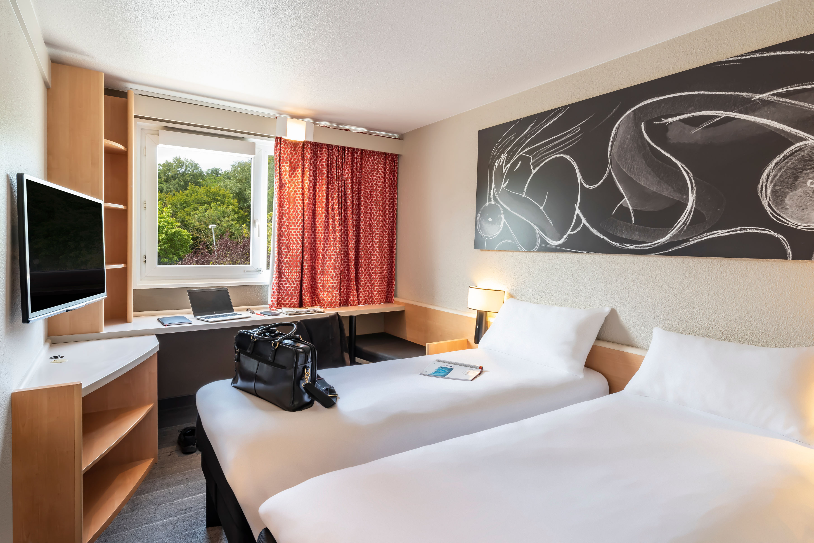
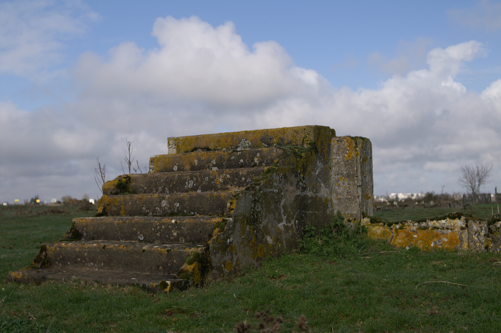

Voyage d'études sur la trace des juifs et tziganes durant la Seconde Guerre Mondiale
Jour 1
Durant le premier jour dans la ville d'Orléans, nous sommes partis au musée du Cercil,
une fois là-bas les guides nous ont retracé l’histoire des camps d’internement dans le Loiret durant la Seconde Guerre Mondiale.
Photo du musée du Cercil :

Les guides nous ont d'abord raconté l'histoire de la petite fille nommée Aline.
Puis, ils nous ont aussi parlé des "baraques",et nous ont évoqué les camps
d’internement du Loiret, notamment celui de Jargeau.
Nous avons ensuite visité le musée,avec l'ensemble des élèves et nos professeurs nous avons découvert une "baraque" datant de la Seconde Guerre Mondiale .
Photo d'une Baraque :

Un peu plus tard, nous devions faire un travail de recherches sur une famille nomade à l'aide de plusieurs document.
Après notre travail, nous avons regardé un film sur la persecution des tziganes en France.
Notre Chambre D'Hôtel :
Le soir, nous sommes allés à l'hôtel, et nous avons déposé nos affaires dans nos chambres.
Une fois fait, nous sommes partis manger. Après le repas, nous sommes allés dormir dans nos chambres.

Jour 2
Le lendemain, nous nous sommes rendus vers Montreuil-Bellay, pour visiter un camp d'internement.
Il ne restait pas grand choses mais nous avons pu en apprendre beaucoup grâce à nos guides.
Photo des restes du camps :

Après cette visite, nous avons découvert le Centre Régional Résistance Et Liberté à Thouars.
Centre Régional Résistance Et Liberté à Thouars :
on a fait une correction collective. Nous avons ensuite pris la route vers Poitier pour y passer la nuit.
Jour 3
Le troisième jours, nous sommes allés dans un collège, nous avons découvert une stèle en l'honneur des tsiganes,
et les guides nous ont raconté l'histoire de cette stèle exposée et la raison de sa précense dans un collège.
Enfin, on a repris la route en direction de Mâcon.